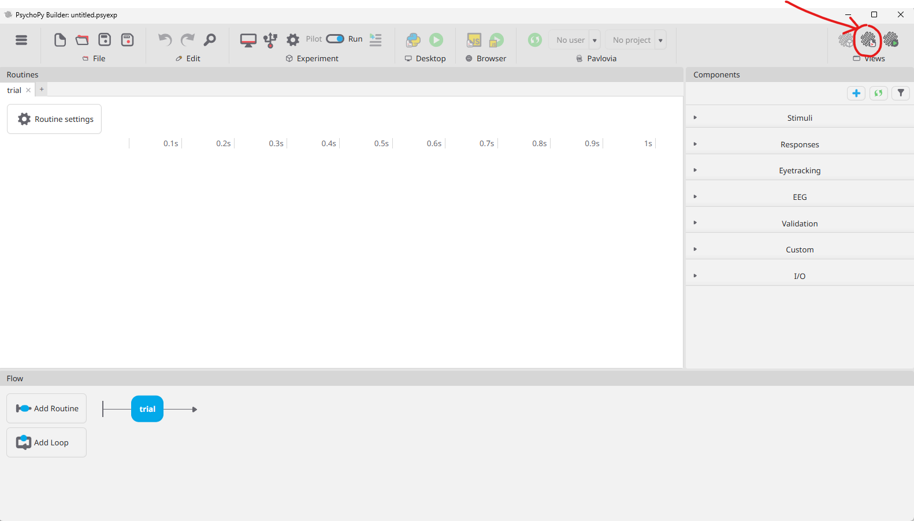
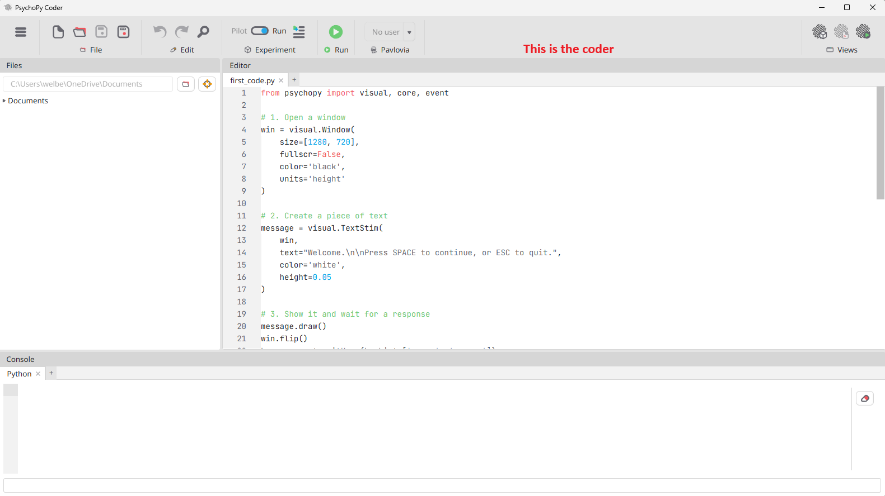
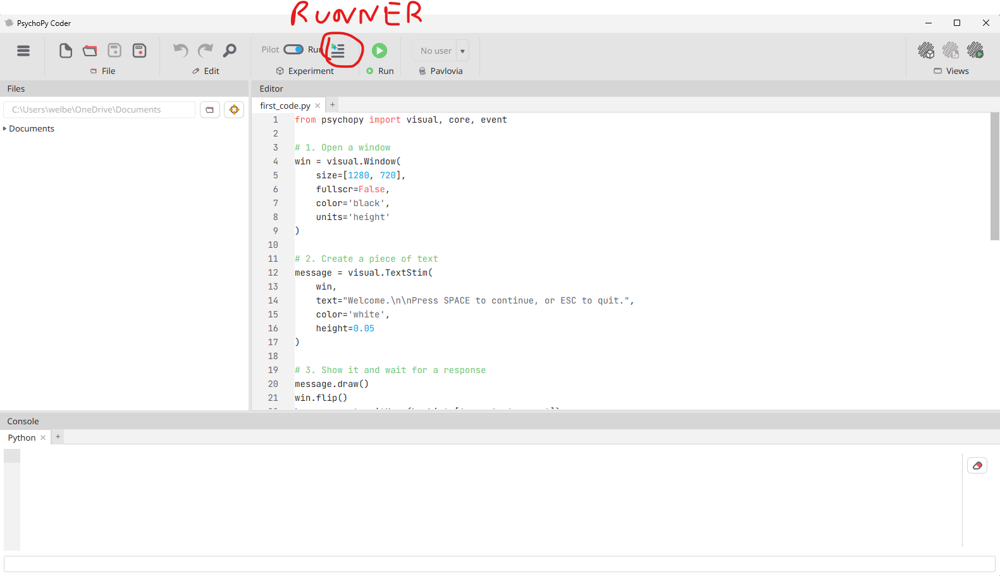
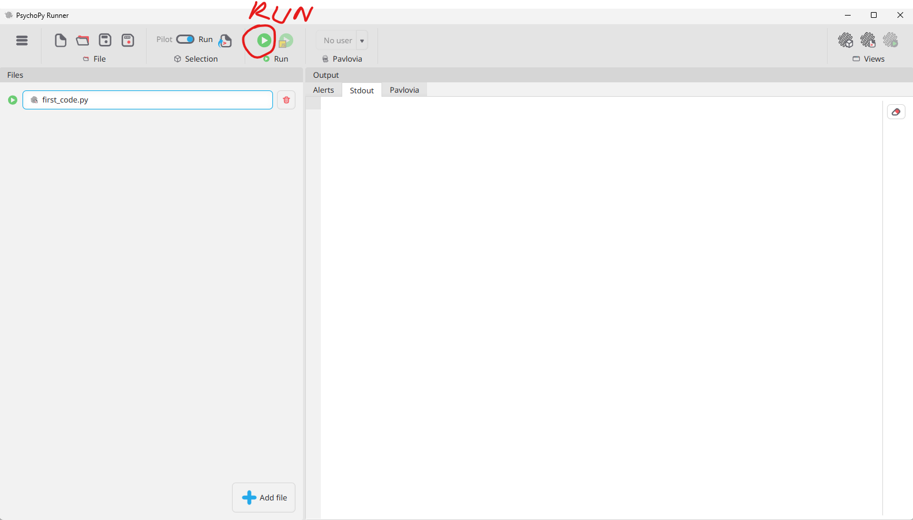
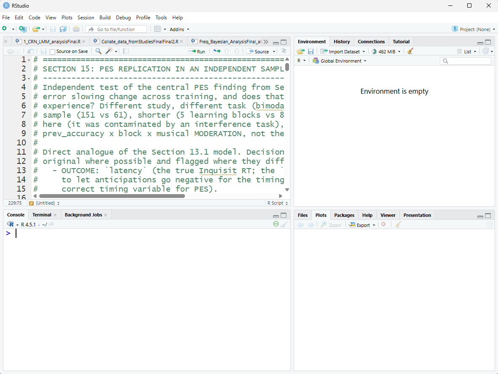

Installing PsychoPy Python
Virtually all experiments we run in the Neuroscience Lab at Curtin use PsychoPy. PsychoPy is free, open-source software for running experiments in the behavioural sciences. The experiment itself is ordinary Python, but the package bundles a great deal that you would otherwise have to assemble by hand: precise control of the screen, accurate timing, sound, keyboard and response-box input, and tools for managing trials and saving data.
At the time of writing the current release is 2026.1.x, which runs on Python 3.10. You do not need to install Python separately, and with the route below you do not need to install any of PsychoPy’s dependencies by hand either.
0.1The recommended route: PsychoPy Studio
Install PsychoPy Studio. It is a single downloadable installer for each operating system, and the first time you run it, it quietly sets up its own managed Python environment with every dependency PsychoPy needs. That is the main reason to prefer it: one download, and everyone ends up with the same working environment, with none of the package wrangling that used to swallow the first week. Studio is a rebuild of the same application you may have seen before, with the familiar views still present (Builder, Coder and Runner). We will live almost entirely in the Coder.
- Go to psychopy.org/download.html.
- Download PsychoPy Studio for your operating system:
the
.exeinstaller.the.dmgdisk image.the.AppImagefile. - Run the installer. The install step needs administrator rights, but once it is installed each user keeps their own preferences and environment without needing admin again.
- Open the
.dmgand drag PsychoPy into your Applications folder. - Make the
.AppImageexecutable (right-click, Properties, Allow executing, orchmod +xin a terminal) and run it. - Launch Studio. The very first start may sit on a message such as “Loading components” while it prepares the environment. Give it a moment, and if it seems stuck, close it and open it once more.
- Open Preferences and set the view that opens by default to the Coder, so you land in the right place each time.
Studio is currently labelled Beta (release 2026.1.x). It is perfectly capable of writing and running everything on this site, but a few rough edges remain, the ones to know about being plugin loading, the Monitor Center, and syncing to Pavlovia. None of those affect the local, Coder-based experiments we build here. If one does bite you, the Standalone version in the next section is the rock-solid fallback and runs the identical code.
Whichever app you use, turn on Use version (the useVersion setting) once an experiment is finished, so it always runs against the PsychoPy version you wrote and tested it on, even after the app updates. This single habit prevents most “it worked last semester” surprises.
0.2Alternatives: Standalone and pip
If you would rather not run beta software, install PsychoPy Standalone instead. It is the tried-and-tested option the PsychoPy team still recommends for an install that simply works, and you fetch it from the same download page as a single installer. Like Studio, it bundles its own Python, every dependency, and the Builder, Coder and Runner. Everything else on this site is identical whichever of the two you choose.
If you already manage your own Python environments, you can instead pip install the library into a clean Python 3.10 environment. Newer Python versions are not yet supported for all of PsychoPy’s dependencies, so stay on 3.10:
python3.10 -m venv psychopy-env
source psychopy-env/bin/activate
pip install psychopypy -3.10 -m venv psychopy-env
psychopy-env\Scripts\activate
pip install psychopyThis route pulls in a large stack of scientific and multimedia libraries, and on some systems one or two fail to build. It is for confident users only. If that is not you yet, use Studio or Standalone and return to this later.
0.3Meeting the Coder and the Runner
The Coder is a text editor with a Python console attached (Figure 2). You write your experiment here and press the green Run button to launch it. The Runner keeps a list of experiments and runs each one in a fresh process, which is how you will normally launch a finished study, so that nothing in the editor accidentally changes between participants.
Switch to the Coder with the Views buttons at the top right of the window; the one circled in red in Figure 1 opens the Coder, and you can switch views at any time. Create a new file, save it as hello.py, and you will write something into it in Module 1.


Everything on this site produces plain-text .csv files with one row per trial. That is exactly the shape readr::read_csv() and the tidyverse expect, so the journey from a finished session to a fitted model is short.
0.4Checking the install works
Before writing a real experiment, confirm the library loads. In the Coder, create check.py and type the following:
import psychopy
print("PsychoPy version:", psychopy.__version__)To see the output, send the script to the Runner with the button circled in Figure 3, then open the Stdout tab and click Run (Figure 4). You only need this route when troubleshooting; later, a working script can be launched straight from the Coder. The version number should print in the output pane.


If you see ModuleNotFoundError instead of a version number, the script is running under a different Python from the one PsychoPy lives in. Inside Studio or Standalone this should not happen, because the Run button always uses PsychoPy’s own managed environment. It usually means the script was launched from another editor or terminal.
Installing R and RStudio R
R is the language your analysis scripts are written in; RStudio is the application you write and run them in. The two are separate downloads from separate places, installed in that order: R first, then RStudio, which finds and uses whichever R it detects on your machine. At the time of writing the current release series is R 4.6.x and RStudio 2026.07.x. Every analysis script on this site is written with the tidyverse, a single bundle of packages you will install once and load at the top of almost every script you write.
0.5Installing R
R is maintained by the R Foundation and distributed through CRAN, the Comprehensive R Archive Network. It is not made by the same organisation as RStudio.
- Go to cran.r-project.org.
- Choose Download R for Windows, open the base subdirectory, and run the installer, accepting the defaults.
- Choose Download R for macOS, download the
.pkgthat matches your chip (Apple silicon or Intel), and run it. If you are not sure which chip you have, Apple menu > About This Mac tells you. - Install from your distribution’s package manager rather than compiling from source. On Ubuntu or Debian, for example:
sudo apt install r-base r-base-dev.
You now have R itself, but you will rarely open it directly. RStudio is the window you will actually work in, and the next section installs it.
0.6Installing RStudio Desktop
- Go to posit.co/download/rstudio-desktop.
- Download the free Desktop edition for your operating system.
- Run the installer and accept the defaults.
- Launch RStudio. If the Console pane (bottom left) prints an R version number as it starts, RStudio has found your R installation and you are ready to go.
Install R before RStudio, not the other way round, so RStudio has something to find on first launch. If you install a newer R later, restart RStudio afterwards so it notices. RStudio settles on an R version for the length of a session and does not re-check while it is running.
0.7An alternative: Positron
RStudio’s maker, Posit, has more recently released Positron, a newer editor built on the same engine as VS Code, that runs R and Python side by side in one application. If you already use VS Code, or you code in both languages, it is worth trying; download it from positron.posit.co. The R code on this site runs identically in either application, since the code itself does not know or care which editor typed it. RStudio remains the more common choice for R-only teaching, and it is the one whose menu names these modules use (Session > Set Working Directory, for instance). Positron offers the same operations under slightly different names.
0.8Meeting RStudio’s panes
RStudio opens as four panes (Figure 5). Top left is the Source pane, where you write and save scripts (.R files); nothing here runs until you tell it to. Bottom left is the Console, where R actually executes code and prints output. You can type directly into it, but anything typed only there is not saved anywhere. Top right holds Environment, a live list of every object you have created and its current value, and History. Bottom right holds Files, Plots, Packages and Help, and is where a plot drawn with ggplot will appear.

Open a new script with File > New File > R Script (Ctrl+Shift+N). Type 2 + 2 into it, place your cursor on that line, and press Ctrl+Enter. What happens in the Console, and where does your cursor go?
Show what to expect
The line runs in the Console below, which prints [1] 4, and the cursor moves to the next line, ready to run again. This run-the-current-line habit is how you will work through every R script on this site.
0.9Installing the tidyverse
Base R can do everything these modules need, but the tidyverse makes it far more readable, and every analysis script from here on assumes it. It is not one package but a curated bundle of about two dozen, of which you will meet dplyr (filtering, grouping, summarising), ggplot2 (plotting), readr (reading files), tidyr (reshaping) and purrr (looping over files) by name.
Type this once into the Console and press Enter:
install.packages("tidyverse")This downloads a genuinely large bundle, so it can take several minutes the first time. If you are asked whether to install “from source”, the answer is almost always no: take the pre-built binary.
You only install a package once per machine, but you load it in every new script with library(tidyverse), the same way every analysis script on this site begins. Installing puts the package on your hard drive; loading makes it available in the current session. Forgetting library() is the single commonest reason a script that worked yesterday now reports could not find function.
0.10Checking the install works
Type the following into the Console, one line at a time:
library(tidyverse)
R.version.stringYou should see a short block of package names attaching, followed by your R version. The block looks alarming the first time, but it is the tidyverse loading its members, not an error.
If library(tidyverse) instead reports there is no package called ‘tidyverse’, the install in 0.9 did not complete. Run install.packages("tidyverse") again and watch for error text partway through, which usually names a missing system dependency.
Before you move on
Tick each check as you complete it. Your ticks are kept in this browser only.